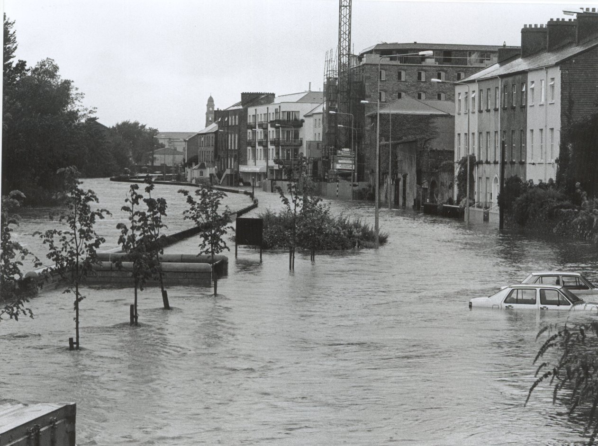
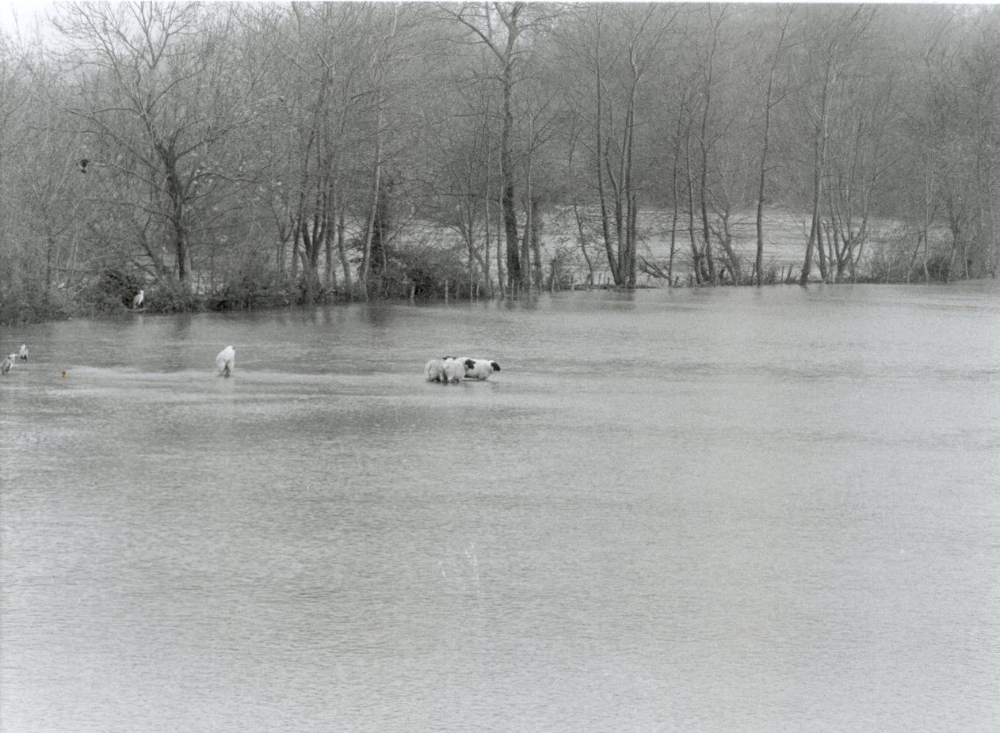

THE EFFECTS
Due to the recent developments in Clonmel, particularly along the quayside and on either side of the river Suir running through the town, all the old buildings along the river have been re – developed or are in the process of being developed. There have also been many commercial and apartment developments. All of these buildings both commercial and residential have been seriously affected by the vulnerability of the river to over flow during heavy rainfall periods. These floods have caused serious hardship and financial worry for residential and business people alike, particularly elderly residents and those in illhealth. Due to the susceptibility to flood damage they have also been seriously affected in relation to insurance cover and the additional losses due to the depreciation of their dwellings.

<
Previous> <Index> <Next>